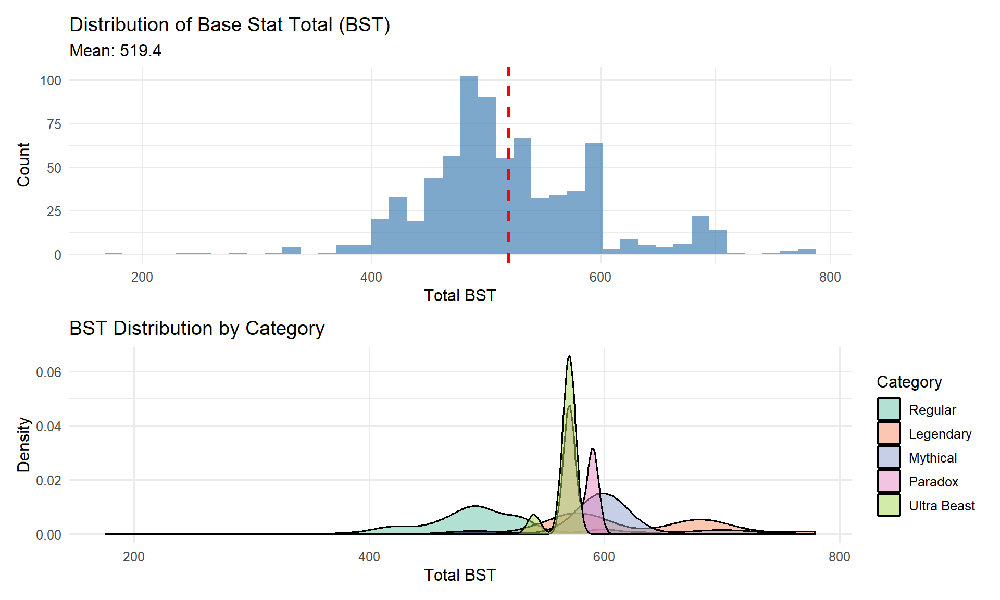
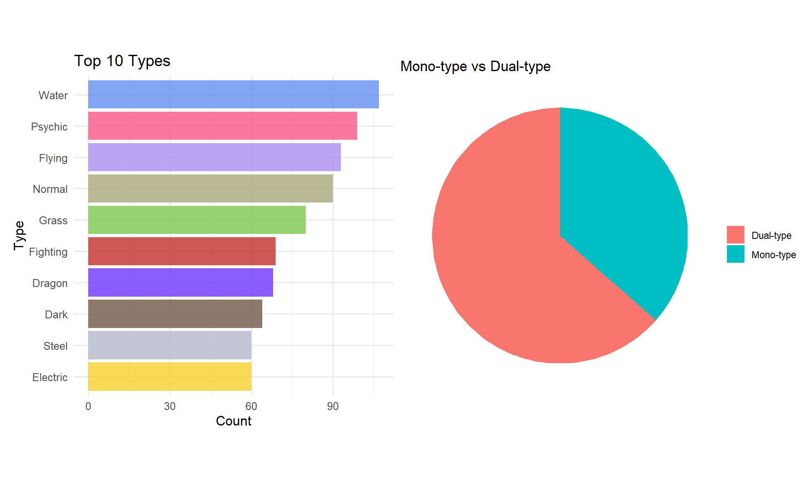
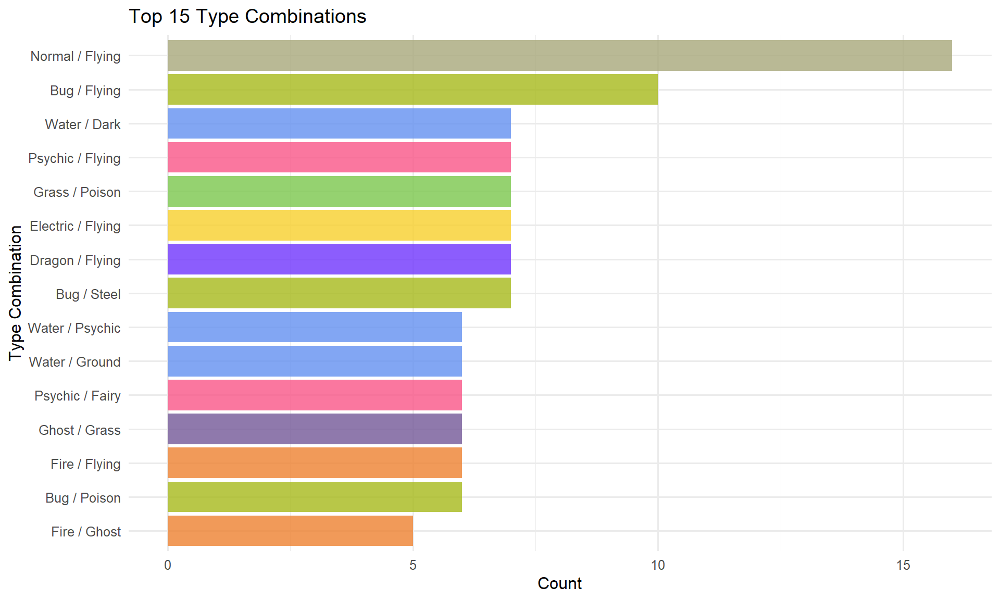
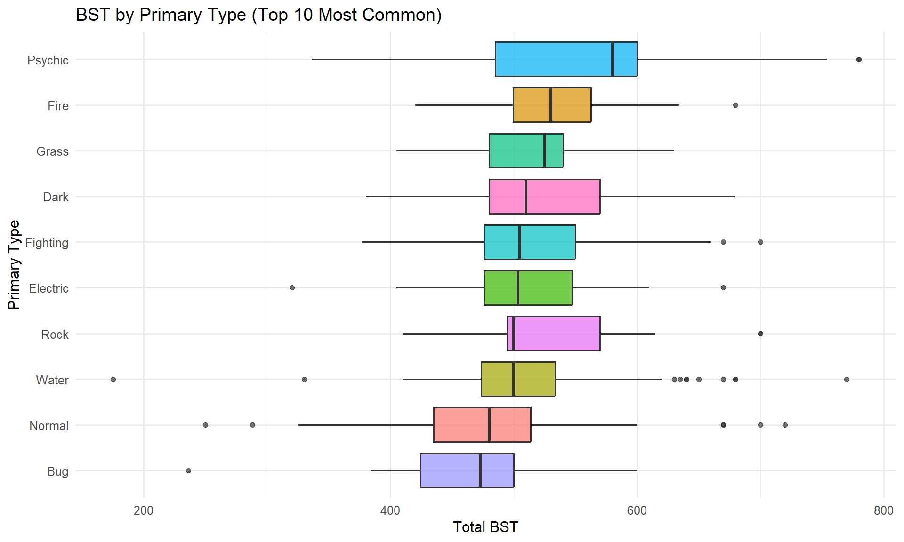

Pokemon EDA - Exploratory Data Analysis
library(tidyverse)
library(ggplot2)
library(knitr)
# Set ggplot theme
theme_set(theme_minimal(base_size = 12))
# Check for optional packages
has_corrplot <- requireNamespace("corrplot", quietly = TRUE)
has_patchwork <- requireNamespace("patchwork", quietly = TRUE)
has_kableExtra <- requireNamespace("kableExtra", quietly = TRUE)
if (has_patchwork) library(patchwork)Overview


This page shows a cozy little collection of visualizations for all major Pokémon stats — including the six base stats (BST) of fully-evolved Pokémon from all nine generations, plus their height, weight, and BMI。
Stats Analysis
Base Stat Total Distribution
# Overall distribution
p1 <- ggplot(pokemon_df, aes(x = total)) +
geom_histogram(bins = 40, fill = "steelblue", alpha = 0.7) +
geom_vline(aes(xintercept = mean(total, na.rm = TRUE)),
color = "red", linetype = "dashed", size = 1
) +
labs(
title = "Distribution of Base Stat Total (BST)",
subtitle = paste("Mean:", round(mean(pokemon_df$total, na.rm = TRUE), 1)),
x = "Total BST", y = "Count"
)
p2 <- ggplot(pokemon_df, aes(x = total, fill = category)) +
geom_density(alpha = 0.5) +
scale_fill_brewer(palette = "Set2") +
labs(
title = "BST Distribution by Category",
x = "Total BST", y = "Density", fill = "Category"
)
if (has_patchwork) {
p1 / p2
} else {
print(p1)
print(p2)
}
🌟 Finding: BST shows a multi-modal distribution
with noticeable right skewness,
indicating structured stat tiers rather than a continuous normal
process.
This becomes more apparent in the “BST Distribution by Category” visualization. The Base Stat Totals of non-regular Pokémon cluster tightly around specific values, reflecting the intentional tiering in Pokémon design.
Individual Stat Distributions
stat_cols <- c("hp", "attack", "defense", "sp_atk", "sp_def", "speed")
pokemon_long <- pokemon_df |>
select(dex, name, category, all_of(stat_cols)) |>
pivot_longer(
cols = all_of(stat_cols),
names_to = "stat",
values_to = "value"
)
ggplot(pokemon_long, aes(x = value, fill = stat)) +
geom_histogram(bins = 30, alpha = 0.7) +
facet_wrap(~stat, scales = "free_y") +
scale_fill_brewer(palette = "Set3") +
labs(
title = "Distribution of Individual Base Stats",
x = "Stat Value", y = "Count"
) +
theme(legend.position = "none")
Lowest vs. Highest(Outer
Max by Mean of each stats)
vs. Highest(Outer
Max by Mean of each stats)
stats_cols <- c("hp", "attack", "defense", "speed", "sp_def", "sp_atk")
p1 <- pokemon_df |> filter(name == "Wishiwashi Solo Form") |> select(all_of(stats_cols))
p2 <- pokemon_df |> filter(name == "Mega Rayquaza") |> select(all_of(stats_cols))
# Set Max
max_row <- pokemon_df |>
summarise(across(all_of(stats_cols), ~ mean(.x, na.rm = TRUE)))
min_row <- rep(0, length(stats_cols))
radar_data <- rbind(max_row, min_row, p1, p2)
rownames(radar_data) <- c("Max", "Min", "Wishiwashi Solo Form", "Mega Rayquaza")
# Plot
fmsb::radarchart(radar_data,
axistype = 1,
pcol = c("#4FACFE", "#007F3A"),
pfcol = adjustcolor(c("#4FACFE", "#007F3A"), alpha.f = 0.3),
plwd = 3,
plty = 1,
cglcol = "grey",
cglty = 1,
)
legend("topright", legend = c("Wishiwashi Solo Form", "Mega Rayquaza"),
col = c("#4FACFE", "#007F3A"), pch = 19, bty = "n")
Physical Attributes
p1 <- ggplot(pokemon_df, aes(x = height_m)) +
geom_histogram(bins = 40, fill = "darkgreen", alpha = 0.7) +
scale_x_log10() +
labs(
title = "Height Distribution (log scale)",
x = "Height (m)", y = "Count"
)
p2 <- ggplot(pokemon_df, aes(x = weight_kgs)) +
geom_histogram(bins = 40, fill = "darkorange", alpha = 0.7) +
scale_x_log10() +
labs(
title = "Weight Distribution (log scale)",
x = "Weight (kg)", y = "Count"
)
p3 <- pokemon_df |>
filter(bmi < 1000) |> # Filter extreme outliers (Cosmoem BMI=99990)
# otherwise the plot will be severly compressed
ggplot(aes(x = bmi)) +
geom_histogram(bins = 40, fill = "purple", alpha = 0.7) +
labs(
title = "BMI Distribution (filtered < 1000)",
subtitle = "Note: Cosmoem (BMI=99,990) excluded as extreme outlier",
x = "BMI", y = "Count"
)
if (has_patchwork) {
(p1 | p2) / p3
} else {
print(p1)
print(p2)
print(p3)
}
🌟 Height Distribution (log scale)
Most Pokémon heights follow a right-skewed distribution, with the
majority falling between 0.5 and 2 meters. The log scale reveals the
dense clustering of small to medium-sized Pokémon that would otherwise
be compressed on a linear axis.
🌟 Weight Distribution (log scale)
Pokémon weights span several orders of magnitude—from lightweight
species to multi-ton legendaries. Using a log scale highlights this
exponential spread and makes the central pattern easier to
interpret.
🌟 BMI Distribution (filtered < 1000)
After removing extreme outliers (e.g., Cosmoem), Pokémon BMI values
primarily fall between 0 and 60. The distribution is heavily
right-skewed, with a long tail representing unusually dense species.
Weight vs. Height
ggplot(pokemon_df, aes(x = height_m, y = weight_kgs, color = type_1)) +
geom_point(alpha = 0.6, size = 2) +
scale_x_log10() +
scale_y_log10() +
geom_smooth(method = "lm", se = FALSE, color = "black") +
labs(
title = "Height vs Weight (log-log scale)",
x = "Height (m)", y = "Weight (kg)", color = "Primary Type"
) +
theme(legend.position = "right")
🌟 Height vs. Weight (log–log scale)
On a log–log scale, height and weight exhibit a near-linear
relationship, suggesting that Pokémon size roughly follows a power-law
growth pattern. Although different typings scatter around the trend
line, they generally follow the same underlying scaling behavior.
Summary: Overall, these physical metrics show that Pokémon exhibit highly varied body structures, but they still follow consistent biological scaling patterns when viewed under appropriate transformations.
Type Analysis
Type Distribution
# Official Type Color
type_colors <- c(
Normal = "#A8A77A",
Fire = "#EE8130",
Water = "#6390F0",
Electric = "#F7D02C",
Grass = "#7AC74C",
Ice = "#96D9D6",
Fighting = "#C22E28",
Poison = "#A33EA1",
Ground = "#E2BF65",
Flying = "#A98FF3",
Psychic = "#F95587",
Bug = "#A6B91A",
Rock = "#B6A136",
Ghost = "#735797",
Dragon = "#6F35FC",
Dark = "#705746",
Steel = "#B7B7CE",
Fairy = "#D685AD"
)
# Types(Normal+Fly will both count to Normal and Flying type)
p1 <- pokemon_df |>
pivot_longer(
cols = c(type_1, type_2),
names_to = "slot",
values_to = "type"
) |>
filter(!is.na(type)) |>
count(type, sort = TRUE) |>
head(10) |>
ggplot(aes(x = reorder(type, n), y = n, fill = type)) +
geom_col(alpha = 0.8) +
scale_fill_manual(values = type_colors) +
coord_flip() +
labs(title = "Top 10 Types", x = "Type", y = "Count") +
theme(legend.position = "none")
# Dual-type proportion
p2 <- pokemon_df |>
count(is_dual_type) |>
mutate(label = if_else(is_dual_type, "Dual-type", "Mono-type")) |>
ggplot(aes(x = "", y = n, fill = label)) +
geom_col(width = 1) +
coord_polar("y") +
labs(title = "Mono-type vs Dual-type", fill = "") +
theme_void()
if (has_patchwork) {
p1 | p2
} else {
print(p1)
print(p2)
}
🌟 Top 10 Types (Based on “has this type” counting rule)
Note: Since each Pokémon is counted once for every type it possesses, dual-type Pokémon contribute to both of their typings. Under this rule, the ranking reflects overall type prevalence in the entire Pokédex, not the number of Pokémon with exclusive types.
Key observations:
✔ 1. Water is the most common type overall
Water appears on the largest number of Pokémon, which aligns with franchise design—many species are water-based, and almost every generation introduces a substantial number of aquatic Pokémon.
✔ 2. Psychic and Flying follow closely
Psychic appears unusually often because many legendaries and special-form Pokémon use it.
Flying is common because many Normal/Flying combinations exist, and Flying is frequently used as a secondary type.
✔ 3. “Classic” base types like Normal and Grass also remain very common
These types are widely used for early-route Pokémon or basic evolutionary stages.
✔ 4. Rarer types (Steel, Dark, Dragon) appear less frequently but still within top 10
Their lower counts reflect intentional design scarcity, especially Dragon and Steel, which tend to be reserved for special or powerful Pokémon.
Type Combinations
# Top type combinations
pokemon_df |>
filter(!is.na(type_2)) |>
count(type_1, type_2, sort = TRUE) |>
head(15) |>
mutate(combo = paste(type_1, "/", type_2)) |>
ggplot(aes(x = reorder(combo, n), y = n, fill = type_1)) +
geom_col(alpha = 0.8) +
scale_fill_manual(values = type_colors) +
coord_flip() +
labs(
title = "Top 15 Type Combinations",
x = "Type Combination", y = "Count"
) +
theme(legend.position = "none") Clearly, the Normal/Flying “starter bird” tradition is alive and well.
Stats by Type
# Get types ranking
top_types <- pokemon_df |>
pivot_longer(
cols = c(type_1, type_2),
names_to = "slot",
values_to = "type"
) |>
filter(!is.na(type)) |>
count(type, sort = TRUE) |>
pull(type)
pokemon_df |>
filter(type_1 %in% top_types) |>
ggplot(aes(x = reorder(type_1, total, median), y = total, fill = type_1)) +
geom_boxplot(alpha = 0.7) +
scale_fill_manual(values = type_colors) +
coord_flip() +
labs(
title = "BST by Type(Most mean to least)",
x = "Owned Type", y = "Total BST"
) +
theme(legend.position = "none")
🌟 Analysis: Dragon-types sit comfortably at the top of the BST chart—no surprise there. The type has basically become the franchise’s “stat type,” boosted every generation by at least one pseudo-legendary\(^{(1)}\) line. These late-game, three-stage powerhouses (“big late bloomers”) dramatically raise the overall average for Dragons.
In contrast, Bug, Normal, and Poison types sit much lower, reflecting their roles as early-route or concept-simple species. The spread in BST across types clearly mirrors long-standing design choices rather than randomness.
Pseudo-legendary (1): Traditionally Dragon-type “late bloomers”. Because they evolve much later in the game, they are granted significantly higher stats, typically reaching their final form only near the end of a playthrough.
Click to expand: Average stats by type(detailed)
# Calculate average stats per type
type_stats <- pokemon_df |>
pivot_longer(
cols = c(type_1, type_2),
names_to = "slot",
values_to = "type"
) |>
filter(!is.na(type)) |>
group_by(type) |>
summarise(
count = n(),
avg_total = mean(total, na.rm = TRUE),
avg_hp = mean(hp, na.rm = TRUE),
avg_attack = mean(attack, na.rm = TRUE),
avg_sp_atk = mean(sp_atk, na.rm = TRUE),
avg_defense = mean(defense, na.rm = TRUE),
avg_sp_def = mean(sp_def, na.rm = TRUE),
avg_speed = mean(speed, na.rm = TRUE)
) |>
arrange(desc(avg_total))
kable(type_stats, caption = "Average Stats by Tyoe", digits = 1)| type | count | avg_total | avg_hp | avg_attack | avg_sp_atk | avg_defense | avg_sp_def | avg_speed |
|---|---|---|---|---|---|---|---|---|
| Dragon | 68 | 600.3 | 97.8 | 108.2 | 113.4 | 95.1 | 95.0 | 90.9 |
| Psychic | 99 | 550.4 | 83.7 | 88.9 | 107.7 | 85.1 | 97.4 | 87.6 |
| Steel | 60 | 545.8 | 79.2 | 106.3 | 81.3 | 119.1 | 90.0 | 70.0 |
| Fire | 59 | 539.7 | 81.4 | 98.3 | 103.6 | 85.2 | 86.2 | 85.1 |
| Fighting | 69 | 536.3 | 84.5 | 119.9 | 72.4 | 88.5 | 81.1 | 89.9 |
| Fairy | 49 | 527.4 | 74.9 | 85.3 | 95.9 | 88.9 | 100.8 | 81.5 |
| Ground | 53 | 526.5 | 93.2 | 106.6 | 75.4 | 103.4 | 80.8 | 67.0 |
| Ice | 45 | 526.4 | 88.3 | 99.3 | 85.4 | 90.4 | 85.1 | 77.8 |
| Dark | 64 | 523.9 | 84.4 | 106.2 | 85.2 | 82.0 | 81.2 | 84.8 |
| Ghost | 57 | 519.3 | 76.4 | 91.3 | 96.4 | 87.8 | 89.9 | 77.5 |
| Flying | 93 | 518.2 | 81.1 | 93.3 | 91.1 | 77.9 | 80.6 | 94.2 |
| Rock | 53 | 518.2 | 79.6 | 103.5 | 69.1 | 113.5 | 86.5 | 66.1 |
| Grass | 80 | 513.0 | 79.7 | 95.9 | 87.4 | 87.6 | 86.6 | 75.8 |
| Water | 107 | 510.7 | 83.5 | 90.5 | 88.6 | 87.3 | 84.5 | 76.3 |
| Electric | 60 | 508.1 | 74.8 | 84.7 | 98.3 | 77.4 | 79.8 | 93.1 |
| Poison | 53 | 503.6 | 80.2 | 89.1 | 87.3 | 80.5 | 85.2 | 81.3 |
| Normal | 90 | 482.6 | 88.6 | 88.0 | 72.2 | 73.7 | 77.5 | 82.6 |
| Bug | 54 | 472.5 | 68.1 | 91.5 | 72.2 | 84.2 | 81.9 | 74.5 |
# Heatmap
type_stats |>
select(type, avg_hp, avg_attack, avg_sp_atk, avg_defense, avg_sp_def, avg_speed) |>
pivot_longer(-type, names_to = "stat", values_to = "value") |>
mutate(stat = str_remove(stat, "avg_")) |>
ggplot(aes(x = stat, y = reorder(type, value), fill = value)) +
geom_tile() +
scale_fill_gradientn(
colours = c("#b9d6f2", "#d0e1f9", "#f7f9ff", "#f9d5e5", "#f6b0c3"),
name = "Average Value"
) +
labs(
title = "Average Stats Heatmap (Top 12 Types by BST)",
x = "Stat", y = "Owned Type", fill = "Average Value"
)
Special Categories Deep Dive
category_stats <- pokemon_df |>
group_by(category) |>
summarise(
count = n(),
avg_total = mean(total, na.rm = TRUE),
avg_hp = mean(hp, na.rm = TRUE),
avg_attack = mean(attack, na.rm = TRUE),
avg_defense = mean(defense, na.rm = TRUE),
avg_sp_atk = mean(sp_atk, na.rm = TRUE),
avg_sp_def = mean(sp_def, na.rm = TRUE),
avg_speed = mean(speed, na.rm = TRUE)
) |>
arrange(desc(avg_total))Legendary vs all Others Stats
Welch Two Sample t-test Result
# Statistical test
legendary_test <- t.test(total ~ is_legendary, data = pokemon_df)
legendary_test##
## Welch Two Sample t-test
##
## data: total by is_legendary
## t = -16.771, df = 129.73, p-value < 2.2e-16
## alternative hypothesis: true difference in means between group FALSE and group TRUE is not equal to 0
## 95 percent confidence interval:
## -135.2013 -106.6682
## sample estimates:
## mean in group FALSE mean in group TRUE
## 502.9563 623.8911Average Stats by Category
kable(category_stats, caption = "Average Stats by Category", digits = 1)| category | count | avg_total | avg_hp | avg_attack | avg_defense | avg_sp_atk | avg_sp_def | avg_speed |
|---|---|---|---|---|---|---|---|---|
| Legendary | 101 | 623.9 | 98.3 | 112.6 | 99.4 | 111.0 | 103.4 | 99.3 |
| Mythical | 28 | 601.4 | 83.9 | 109.3 | 98.5 | 111.9 | 96.2 | 101.6 |
| Paradox | 20 | 578.0 | 95.9 | 103.6 | 94.5 | 93.9 | 90.7 | 99.4 |
| Ultra Beast | 10 | 567.0 | 93.6 | 113.2 | 91.8 | 108.4 | 73.0 | 87.0 |
| Regular | 583 | 494.6 | 79.0 | 91.7 | 84.2 | 81.3 | 81.8 | 76.6 |
# Violin plot
pokemon_df |>
mutate(label = if_else(is_legendary, "Legendary", "Others")) |>
ggplot(aes(x = label, y = total, fill = label)) +
geom_violin(alpha = 0.7) +
geom_boxplot(width = 0.2, alpha = 0.5) +
scale_fill_manual(values = c("Others" = "steelblue", "Legendary" = "gold")) +
labs(
title = "BST: Legendary vs Other Pokemons",
x = "", y = "Total BST"
) +
theme(legend.position = "none")
🌟 Finding: Based on a Welch two-sample t-test (t = -16.77, p < 2.8^{-34}), Legendary Pokémon have a significantly higher mean BST (623.9) compared to non-Legendary Pokémon (503), about 24% higher.
The Violin plot gives same result: Legendary Pokémon have significantly higher and more concentrated total base stats compared to all other Pokémon, whose BST values are far more diverse and widely spread.
Summary


EDA KEY FINDINGS
- Stats Distribution: The distribution of Pokémon’s base stats is not normal, but rather a multi-modal distribution.
- “Stats Monster”: “Has Dragon Type” pokemons owns greatest mean of BST.
- “Birds Everywhere Outside”: Normal/Flying type Pokémon are the most numerous, followed by Bug/Flying type.
- “Pokémon Ecology”: Despite their exaggerated scale, Pokémon size distributions share a similar right-skewed shape with real animals.
Key Statistics
- Legendary vs Other(BST)
- Difference(greater than other) is highly significant with p < 2.8^{-34}
- BST estimate was about 24% higher than other pokemons.
The statistical analysis includes only fully evolved Pokémon and special final forms. Unevolved species (e.g., Charmander) are excluded.